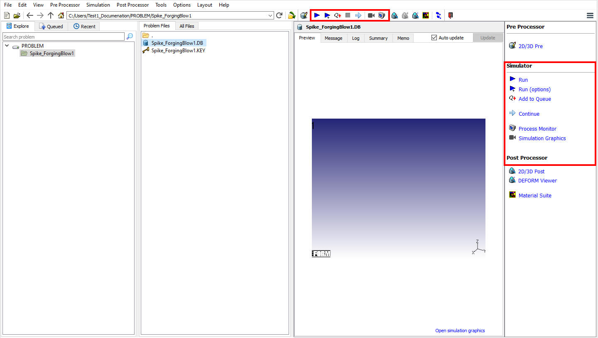

Simulator options are used to simulate the problem. The Problem can be simulate in Interactive or in Batch mode, Problem can also be simulate using local simulation server or using remote simulation server. For DOE/OPT jobs can be simulate under Integrated Manufacturing process (MO) Simulation mode.
Simuator options are available in GUI Main - under Simulator list, Integrated Manufacturing process (MO) - Simulation mode, Forming Express wizard - Simulation mode and Inverse Heat wizard - Simulation mode
For more information refer Integrated Manufacturing Process (MO) Simulation layout, Forming Express wizard - Simulation mode and Inverse Heat wizard - Simulation mode.
In GUI Main, when user select the database under Problem Files then the Run options will be displayed under Simulator as shown in Fig. 23.1.

GUI Main Simulator options
Related Topics:
23.1. Start Stop and Resume Simulations
23.2. interactive and batch mode
23.6. Running Shared folder Simulations